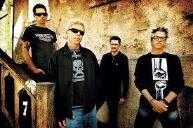
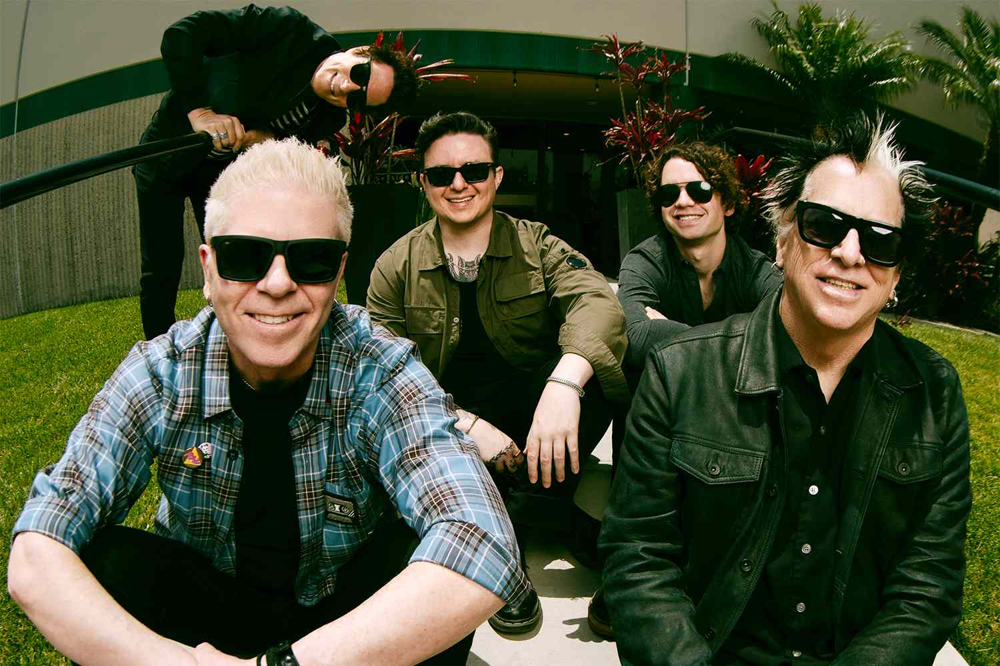

um banda de rock formada na california

The Offspring é uma banda de punk rock formada em 1984, na Califórnia, por por Dexter Holland (vocal/guitarra) e Greg K. (baixo)Eles se destacaram nos anos 90 com álbuns como Smash (1994), que trouxe hits como "Self Esteem" e "Come Out and Play",
ajudando a popularizar o punk rock melódico. Outros discos de sucesso incluem Ixnay on the Hombre (1997) e Americana (1998),
como "Pretty Fly (for a White Guy)" e "The Kids Aren't Alright". A banda continuou lançando álbuns ao longo dos anos, sempre mantendo sua pegada energética e letras irreverentes.
Apesar de mudanças na formação, The Offspring segue ativa e é uma das bandas mais influentes do punk rock moderno."Nós não somos punks. Somos uma banda de rock que toca punk rock."
Dexter Holland
""When we were young, the future was so bright
Woah-oh
The old neighborhood was so alive
Woah-oh
And every kid on the whole damn street
Woah-oh
Was gonna make it big and not be beat
Now the neighborhood's cracked and torn
Woah-
The kids are grown up, but their lives are worn
Woah-oh
How can one little street swallow so many lives?"
the offspring - The Kids Aren't Alright

você pode conhecer mais sobre a banda clicando aqui